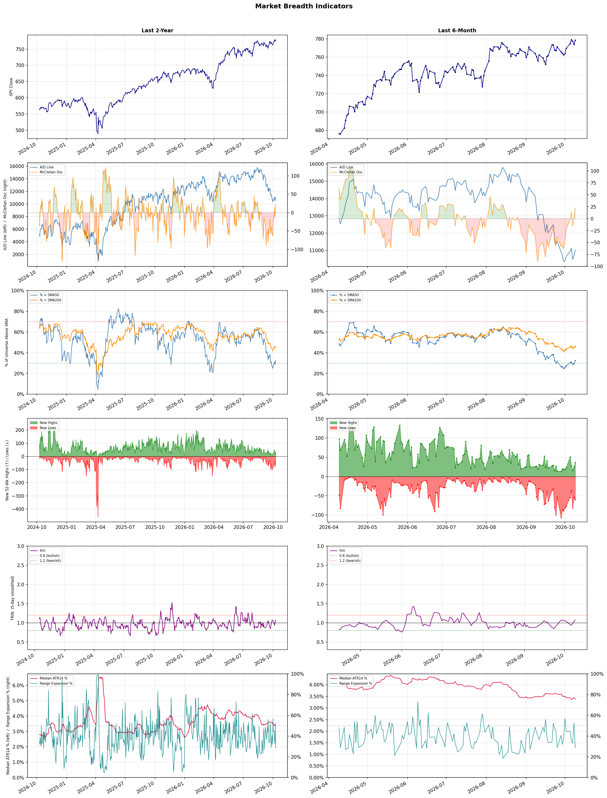

A daily market breadth and sector rotation report for active investors
| Item | Read |
|---|---|
| Regime | Defensive |
| Risk posture | Defensive |
| Universe | 1,316 stocks tracked · 37 new 52-week highs · 30 active swing setups |
| Breadth | only 32.5% of tracked stocks are above SMA50, new lows exceed new highs (60 vs 37) |
| Leadership | Oil & Gas Refining & Marketing, Health Information Services, and Diagnostics & Research |
| Weakest groups | REIT - Mortgage, Gambling, and Resorts & Casinos |
Use this report to prioritize research and chart review; validate entries, stops, liquidity, earnings, and risk before acting.
| Item | Read |
|---|---|
| Primary read | Defensive regime with Defensive risk posture. |
| Research queue | MPC, VLO, DINO, PBF, CSAN |
| Leadership focus | Oil & Gas Refining & Marketing, Health Information Services, and Diagnostics & Research |
| Caution list | REIT - Mortgage, Gambling, and Resorts & Casinos |
| Review prompt | Check extension risk, chart location, fundamentals, valuation, and earnings before using any research row. |
| Item | Read |
|---|---|
| Primary read | 3 active risk warnings; use screen output as watchlist input only. |
| Bullish screens | DINO, BOX, GTLB, OKTA, PBR |
| Bearish screens | HRL, SMR, FMC, MOS, MPT |
| Alerts / levels | Automated trigger, stop, ATR, liquidity, reward/risk, and event-risk levels are pending future enrichment. |
| Review prompt | Open the linked chart, define trigger and invalidation, then check liquidity and event risk independently. |
Risk Posture: Defensive — screen backdrop favors caution; require independent risk review before new exposure
Metric context: McClellan below -50 = elevated selling pressure; below -100 = washout territory. Range Expansion = share of stocks with daily range above their 20-day average. Signal Density = share of tracked names appearing in signal screens.
| Breadth Date | % > SMA50 | % > SMA200 | New Highs | New Lows | McClellan | Median Range | Avg Range | Median ATR14 | Range Expansion | Signal Density |
|---|---|---|---|---|---|---|---|---|---|---|
| 2026-10-09 | 32.5% | 46.1% | 37 | 60 | 22.9 | 2.7% | 3.3% | 3.4% | 28.6% | 7.7% |

Prior comparison date: October 8, 2026
| Metric | Prior | Current | Change |
|---|---|---|---|
| Regime | Defensive | Defensive | unchanged |
| Risk Posture | Defensive | Defensive | unchanged |
| % > SMA50 | 29.7% | 32.5% | +2.8 pts |
| % > SMA200 | 45.3% | 46.1% | +0.7 pts |
| New Highs | 25 | 37 | +12 |
| New Lows | 54 | 60 | -6 |
Top-10 industries entering: Copper and REIT - Hotel & Motel. Top-10 industries leaving: Apparel Retail and Semiconductors. New multi-signal long setups: BOX, EXEL, GTLB, HAS, MRNA, OKTA, PBR. New multi-signal short setups: FMC, HRL, MOS.
| Status | Tickers | Read |
|---|---|---|
| Added | ALAB, AMAT, BJ, BOX, CHD, DOCS, EXEL, FLEX | New technical screen matches vs prior report. |
| Removed | ACAD, BBAI, BEKE, BIDU, BLDP, BUR, CWH, DHT | No longer present in today's technical screen matches. |
| Still Active | DINO, MPT, SMR | Appeared in both current and prior reports. |
| Promoted | none | Model Screen Score improved by at least 15 points. |
| Downgraded | none | Model Screen Score declined by at least 15 points. |
| Direction | Industry | ETF | Prior Rank | Current Rank | Days | Rank Change |
|---|---|---|---|---|---|---|
| Rose | Electronic Components | XLK | 81 | 13 | 35 | +68 |
| Rose | Semiconductor Equipment & Materials | SOXX | 80 | 14 | 35 | +66 |
| Rose | Communication Equipment | IYZ | 78 | 18 | 35 | +60 |
| Rose | Apparel Manufacturing | N/A | 84 | 26 | 28 | +58 |
| Rose | Semiconductors | SOXX | 67 | 11 | 35 | +56 |
Bull: The Electronic Components sector is likely experiencing a rise in relative strength due to positive earnings reports and promising industry trends highlighted by companies like Amphenol, which is noted as a leader in the space. Despite recent volatility, such as TTM Technologies' 5.3% drop amid sector-wide selling, the overall outlook remains bullish as evidenced by the identification of key stocks to watch, indicating strong underlying demand and innovation within the industry. This resilience suggests that the sector is well-positioned to capitalize on ongoing technological advancements and increased consumer electronics demand.
Bear: While the bull thesis highlights positive earnings from leaders like Amphenol, it overlooks the significant volatility and sector-wide selling exemplified by TTM Technologies' 5.3% drop, which raises concerns about the sustainability of growth in the electronic components sector. Additionally, the identification of "promising industry trends" may not fully account for potential headwinds such as supply chain disruptions, rising material costs, and increasing competition, which could undermine profitability and dampen the overall outlook for the sector in the near term.
Verdict: The electronic components sector is likely rising due to strong earnings reports from industry leaders like Amphenol, indicating robust demand and innovation amidst ongoing technological advancements. However, investors should remain cautious of potential headwinds such as supply chain disruptions, rising material costs, and increased competition, which could threaten profitability and undermine the sector's growth momentum in the near term.
Sources: Google News
Bull: The Semiconductor Equipment & Materials sector is experiencing a bullish trend due to a notable shift in investor sentiment, driven by optimism surrounding the AI sector and its demand for advanced semiconductor technologies. Recent headlines highlight a sector-wide rally, with significant gains in key players like Veeco Instruments, Lam Research, and Applied Materials, indicating strong market confidence in the growth potential of semiconductor equipment as memory chip demand surges. This momentum is further supported by analysts identifying top semiconductor stocks for the future, reinforcing the sector's attractiveness amidst broader technological advancements.
Bear: While the recent rally in semiconductor equipment and materials stocks may appear promising, it is essential to consider the cyclical nature of the semiconductor industry, which is prone to sharp downturns following periods of rapid growth. Additionally, the current optimism surrounding AI may be overblown, as the actual demand for advanced semiconductor technologies can be unpredictable and contingent on broader economic conditions, including potential supply chain disruptions and geopolitical tensions that could impact production and sales. Thus, the bullish sentiment may not be sustainable, and investors should be cautious of overextending their confidence in this sector.
Verdict: The Semiconductor Equipment & Materials sector is rising primarily due to heightened investor optimism fueled by increasing demand for advanced semiconductor technologies driven by the AI boom, leading to significant gains in major companies like Veeco Instruments, Lam Research, and Applied Materials. However, investors should remain cautious of the cyclical nature of the semiconductor industry, as past trends indicate potential sharp downturns following growth phases, compounded by unpredictable demand and external risks such as supply chain disruptions and geopolitical tensions.
Sources: Google News
Bull: The Communication Equipment sector is experiencing rising relative strength primarily due to the increasing demand for advanced connectivity solutions, particularly with the ongoing rollout of 5G technology, as highlighted by the article on the "12 Best 5G Stocks for 2026." Additionally, the sector's resilience is evident in the recent headlines indicating significant stock movements, such as Viasat's notable fluctuations amid a broader sector rally, suggesting investor confidence in the industry's growth potential despite challenges. Furthermore, the substantial turnover in telecom equipment and semiconductors, accounting for nearly 60% of daily transactions in A-shares, underscores strong market interest and investment in this space.
Bear: While the bull thesis highlights rising demand for 5G technology and recent stock movements as signs of strength, it overlooks significant headwinds facing the Communication Equipment sector, such as supply chain disruptions, rising component costs, and increasing competition from alternative technologies. Additionally, the volatility in stock prices, as seen with Viasat's sharp declines, may indicate underlying instability and investor uncertainty rather than robust confidence in long-term growth. The substantial turnover in A-shares could also reflect speculative trading rather than genuine long-term investment interest, raising concerns about the sustainability of this rally.
Verdict: The Communication Equipment sector is likely experiencing a rise due to the robust demand for advanced connectivity solutions driven by the 5G rollout, which is attracting significant investment and trading activity. However, investors should be cautious of the key risk posed by supply chain disruptions and rising component costs, which could undermine the sector's growth potential and lead to increased volatility in stock prices. It is essential to monitor these challenges closely while considering investment opportunities in this space.
Sources: Google News
Bull: The Apparel Manufacturing industry is experiencing rising relative strength due to favorable macroeconomic trends, including shifts in trade deals and sourcing strategies, particularly away from China, as highlighted in The Economic Times. Additionally, positive sentiment surrounding key players in the sector, as noted in multiple articles from The Motley Fool and Yahoo Finance, suggests that investors are increasingly confident in the growth potential of textile-apparel stocks, positioning them well for the upcoming years. These factors collectively indicate a robust recovery and expansion phase for the industry, making it an attractive investment opportunity.
Bear: While the Apparel Manufacturing industry may currently exhibit rising relative strength, this trend could be misleading due to underlying vulnerabilities such as increased production costs, supply chain disruptions, and a potential slowdown in consumer spending as inflation persists. Additionally, the shift away from China may lead to higher operational complexities and costs for companies, which could erode profit margins and negate any perceived growth potential. Furthermore, the optimistic sentiment reflected in recent headlines may not account for the cyclical nature of the retail sector, where demand can quickly wane in response to economic uncertainties.
Verdict: The Apparel Manufacturing industry's rising relative strength is primarily driven by favorable macroeconomic shifts, including diversification of sourcing strategies away from China, which enhances resilience and growth potential. However, investors should remain cautious of the key risk posed by rising production costs and potential supply chain disruptions, which could undermine profit margins and dampen demand amid ongoing inflationary pressures. Therefore, while the industry presents attractive investment opportunities, a close watch on economic indicators and consumer spending trends is essential.
Sources: Google News
Bull: The semiconductor industry is experiencing a rising relative strength due to a combination of robust demand for chips across various sectors, including AI and data centers, and a recent rebound following a sector selloff, as highlighted by BofA's identification of top semiconductor stocks to buy. Additionally, Micron's notable 4% gain amidst a broader market decline signals investor confidence and resilience in key players, while headlines about breakthroughs in chip stocks suggest a recovery momentum that could further attract investment. This positive sentiment is reinforced by reports indicating a prosperous outlook for the industry, as evidenced by the Globe and Mail's focus on promising semiconductor stocks.
Bear: While the semiconductor industry may currently exhibit rising relative strength, this could be misleading as it often reflects short-term market reactions rather than sustainable growth. The recent gains, particularly by Micron, may not be indicative of broader sector health, especially given the cyclical nature of the semiconductor market and potential overcapacity concerns. Additionally, the ongoing geopolitical tensions and supply chain vulnerabilities could pose significant risks, undermining the optimistic outlook suggested by recent headlines.
Verdict: The semiconductor industry's recent rise is fundamentally driven by surging demand for chips in high-growth sectors like AI and data centers, coupled with a rebound from previous selloffs that has restored investor confidence in key players like Micron. However, the key risk lies in the cyclical nature of the market and potential overcapacity, which could undermine long-term growth amidst ongoing geopolitical tensions and supply chain vulnerabilities. Investors should remain cautious and monitor these factors closely while considering opportunities in the sector.
Sources: Google News
| Direction | Industry | ETF | Prior Rank | Current Rank | Days | Rank Change |
|---|---|---|---|---|---|---|
| Fell | Uranium | URA | 21 | 83 | 35 | -62 |
| Fell | Agricultural Inputs | N/A | 5 | 62 | 35 | -57 |
| Fell | Telecom Services | N/A | 22 | 76 | 28 | -54 |
| Fell | Banks - Diversified | N/A | 10 | 60 | 28 | -50 |
| Fell | Gambling | N/A | 39 | 86 | 28 | -47 |
Bear: While the bull analyst suggests that the recent sector correction presents a buying opportunity for undervalued producers, it is crucial to recognize that the overall weakness in the uranium sector reflects deeper, systemic issues. The disparity between profitable producers and loss-making developers raises significant concerns about the sustainability of the industry's growth, especially given the volatile economic environment and potential regulatory challenges surrounding nuclear energy. Furthermore, the decline in relative strength indicates a lack of investor confidence, suggesting that the sector may face continued headwinds that could suppress any potential recovery, making it a risky investment at this juncture.
Bull: The recent decline in the relative strength of the uranium sector can primarily be attributed to a sector correction that has highlighted the disparity between profitable uranium producers and loss-making developers, as noted in the ChartMill headline. Additionally, the 7.69% drop in enCore Energy's stock reflects broader market concerns about downside risks within the industry, potentially driven by investor caution amidst a volatile economic environment and the need for clearer profitability signals from developers. This correction may create an opportunity for discerning investors to capitalize on undervalued producers as the market stabilizes.
Verdict: The recent decline in the uranium sector appears to stem from a market correction that has exposed the vulnerabilities of loss-making developers amidst a backdrop of economic volatility and regulatory uncertainties. This situation raises concerns about the sustainability of growth in the industry, as investor confidence wanes, suggesting that potential recovery may be hindered by ongoing systemic issues. Investors should proceed with caution, focusing on financially stable producers while remaining aware of the broader risks that could impact the sector's future performance.
Sources: Google News
Bear: While the bull analyst highlights the potential for companies like Escorts Kubota, Coromandel International, and Godrej Agrovet to adapt to current challenges, the reality is that prolonged supply shocks in fertilizer and energy are likely to lead to sustained cost pressures and reduced margins for agricultural input producers. Furthermore, the broader economic environment remains uncertain, with potential recessionary pressures that could dampen demand for agricultural inputs, making it difficult for these companies to capitalize on any supposed recovery in the materials sector. Ultimately, the falling relative strength trend suggests that investor confidence is waning, and the sector may struggle to regain traction in the near term.
Bull: The Agricultural Inputs sector is experiencing a decline in relative strength primarily due to supply shocks in fertilizer and energy, as highlighted in the Webull article. These disruptions are causing increased costs and uncertainty for producers, which may dampen investor sentiment. However, the strong future roadmaps of companies like Escorts Kubota, Coromandel International, and Godrej Agrovet, as noted in the Univest article, suggest that these firms are well-positioned to adapt and thrive, potentially reversing the sector's relative weakness as they capitalize on improving economic conditions in the materials sector, as indicated by Seeking Alpha.
Verdict: The agricultural inputs sector is experiencing a decline primarily due to ongoing supply shocks in fertilizer and energy, which are driving up costs and squeezing margins for producers. While companies like Escorts Kubota, Coromandel International, and Godrej Agrovet have promising roadmaps, the key risk remains the potential for prolonged supply chain disruptions and broader economic uncertainties that could further dampen demand for agricultural inputs. Investors should closely monitor these macroeconomic indicators and the companies' ability to manage costs and adapt to changing market conditions before making investment decisions.
Sources: Google News
Bear: While the bull analyst attributes the telecom sector's relative strength decline to broad market sell-offs and competitive pressures, it is crucial to recognize that the sector faces fundamental challenges, including rising operational costs, regulatory pressures, and a saturated market with diminishing returns on investment. Furthermore, the significant drop in Lumen Technologies' stock price signals deeper issues within the company itself, such as potential mismanagement or failure to adapt to evolving consumer demands, which could undermine investor confidence across the entire sector. As competition intensifies, the ability of telecom companies to maintain profitability and grow may be increasingly compromised, warranting a more cautious outlook.
Bull: The Telecom Services sector is experiencing a relative strength decline primarily due to broad market sell-offs, as indicated by the significant drop in Lumen Technologies' stock price by 6.9%. Additionally, the headlines suggest a competitive landscape where larger players are dominating market cap, potentially leading to investor concerns about growth and profitability in a sector that is increasingly saturated. The focus on identifying "winners" in the communication services space further underscores the need for differentiation among telecom stocks, which may be weighing on overall sector sentiment.
Verdict: The Telecom Services sector's decline is primarily driven by fundamental challenges such as rising operational costs, regulatory pressures, and a saturated market, which are exacerbated by significant stock price drops like that of Lumen Technologies. The key risk highlighted by the bear case is the potential for mismanagement and failure to adapt to consumer demands, which could further erode investor confidence and profitability across the sector. Investors should approach telecom stocks with caution, focusing on companies that demonstrate strong operational efficiency and adaptability to changing market conditions.
Sources: Google News
Bear: While the bull analyst attributes the falling relative strength of the Banks - Diversified sector to macroeconomic concerns, it is crucial to recognize that this trend may also indicate deeper structural issues within the banking industry itself. The recent headlines highlight a focus on "best bank stocks" and "best bank ETFs," which could suggest a flight to quality rather than a robust outlook for the sector as a whole, signaling that many banks may be struggling with profitability, regulatory pressures, and rising credit risks. Additionally, the uneven performance among banks like Truist Financial raises concerns about the sustainability of growth in a competitive landscape, where weaker institutions may face significant challenges ahead.
Bull: The falling relative strength of the Banks - Diversified sector can be attributed to macroeconomic concerns, particularly around interest rate fluctuations and economic uncertainty, which are highlighted in the recent headlines. For instance, the focus on "best bank stocks" and "best bank ETFs for 2026" suggests a cautious outlook as investors seek stability and growth potential in a volatile market. Additionally, the benchmarking of specific banks like Truist Financial indicates a competitive landscape where performance may be uneven, further impacting investor sentiment towards the sector as a whole.
Verdict: The recent decline in the Banks - Diversified sector is primarily driven by macroeconomic concerns, particularly interest rate fluctuations and economic uncertainty, which have led investors to seek stability in select bank stocks and ETFs. However, the bear case highlights a critical risk: deeper structural issues within the banking industry, such as profitability challenges and rising credit risks, which could undermine the overall stability and growth prospects of weaker institutions. Investors should remain vigilant and consider focusing on banks with strong fundamentals and robust risk management practices to navigate this volatile environment.
Sources: Google News
Bear: While the bull analyst attributes the current decline in the gambling industry to macroeconomic pressures and necessary recalibrations, it is crucial to recognize that these issues may signal deeper, more systemic challenges within the sector. The ongoing layoffs in the sports betting industry indicate a fundamental oversupply and a potential saturation of the market, raising concerns about the sustainability of growth in an environment where consumer interest may be waning. Additionally, the persistent stock weakness, despite claims of "solid" industry trends, suggests that investor confidence is eroding, potentially foreshadowing a prolonged downturn rather than a temporary setback.
Bull: The gambling industry is currently experiencing a decline in relative strength primarily due to macroeconomic pressures and industry recalibrations, as highlighted by headlines discussing layoffs in the sports betting sector and persistent stock weakness despite solid industry trends. Factors such as rising interest rates, inflationary pressures, and a shift in consumer spending habits are likely causing investors to reassess the growth potential of gaming stocks, leading to increased caution in the market. Additionally, the need for companies to adapt to a rapidly changing landscape, as noted in the articles, suggests that while there are promising long-term opportunities, short-term volatility is impacting investor sentiment.
Verdict: The gambling industry's current decline is primarily driven by macroeconomic factors such as rising interest rates and inflation, which are reshaping consumer spending habits and leading to cautious investor sentiment. However, the bear case highlights a critical risk: ongoing layoffs and signs of market saturation may indicate deeper systemic issues that could hinder long-term growth, suggesting that investors should closely monitor industry dynamics and reassess their exposure to gaming stocks.
Sources: Google News
| Industry | Rank | ETF | 7d | 14d | 28d | 42d | Chg 42d | Size | 20D | 60D | Composite | Active Setups |
|---|---|---|---|---|---|---|---|---|---|---|---|---|
| Oil & Gas Refining & Marketing | 1 | CRAK | 1 | 1 | 1 | N/A | N/A | 7 | 9.8% | 36.0% | 0.996 | 0 |
| Health Information Services | 2 | N/A | 4 | 3 | 7 | N/A | N/A | 12 | 13.9% | 32.7% | 0.942 | 1 |
| Diagnostics & Research | 3 | N/A | 2 | 2 | 4 | N/A | N/A | 16 | 7.5% | 22.5% | 0.900 | 1 |
| Copper | 4 | COPX | 5 | 21 | 12 | N/A | N/A | 6 | 3.8% | 29.6% | 0.856 | 0 |
| Software - Infrastructure | 5 | IGV | 11 | 10 | 28 | N/A | N/A | 62 | 7.7% | 13.8% | 0.842 | 1 |
| Oil & Gas Integrated | 6 | XLE | 9 | 4 | 2 | N/A | N/A | 10 | 0.6% | 18.3% | 0.821 | 0 |
| Discount Stores | 7 | XRT | 15 | 15 | 38 | N/A | N/A | 7 | 4.9% | 4.9% | 0.807 | 1 |
| REIT - Hotel & Motel | 8 | XLRE | 10 | 30 | 43 | N/A | N/A | 9 | 4.8% | -2.4% | 0.799 | 0 |
| Household & Personal Products | 9 | XLP | 24 | 26 | 21 | N/A | N/A | 12 | 3.1% | 6.7% | 0.791 | 1 |
| Software - Application | 10 | IGV | 23 | 32 | 25 | N/A | N/A | 74 | 4.8% | 14.2% | 0.789 | 1 |
Rank columns (7d–42d) show the industry's rank that many trading days ago — lower is stronger. Chg 42d = rank change vs 42 trading days ago — positive means the industry moved up. 20D and 60D are the mean stock return within the industry over that period. Active Setups: count of today's swing-trade candidates from this industry appearing across all signal screens.
| Industry | Rank | ETF | 7d | 14d | 28d | 42d | Chg 42d | Size | 20D | 60D | Composite | Active Setups |
|---|---|---|---|---|---|---|---|---|---|---|---|---|
| REIT - Mortgage | 87 | N/A | 85 | 83 | 61 | N/A | N/A | 11 | -16.2% | -23.2% | 0.026 | 0 |
| Gambling | 86 | N/A | 86 | 87 | 39 | N/A | N/A | 5 | -19.4% | -24.3% | 0.033 | 0 |
| Resorts & Casinos | 85 | N/A | 87 | 86 | 75 | N/A | N/A | 6 | -14.4% | -22.0% | 0.049 | 0 |
| Chemicals | 84 | N/A | 83 | 78 | 82 | N/A | N/A | 8 | -10.7% | -22.0% | 0.064 | 0 |
| Uranium | 83 | URA | 84 | 82 | 64 | N/A | N/A | 6 | -16.1% | -8.4% | 0.090 | 0 |
| Solar | 82 | TAN | 74 | 85 | 86 | N/A | N/A | 8 | -6.3% | -26.5% | 0.154 | 0 |
| Real Estate Services | 81 | N/A | 80 | 81 | 74 | N/A | N/A | 9 | -7.7% | -15.6% | 0.154 | 1 |
| Utilities - Renewable | 80 | N/A | 57 | 63 | 72 | N/A | N/A | 6 | -10.6% | -15.3% | 0.163 | 0 |
| Other Industrial Metals & Mining | 79 | N/A | 76 | 66 | 56 | N/A | N/A | 21 | -11.5% | -6.2% | 0.172 | 0 |
| Packaging & Containers | 78 | N/A | 77 | 75 | 71 | N/A | N/A | 7 | -6.0% | -14.3% | 0.175 | 0 |
Rank columns (7d–42d) show the industry's rank that many trading days ago — lower is stronger. Chg 42d = rank change vs 42 trading days ago — positive means the industry moved up. 20D and 60D are the mean stock return within the industry over that period. Active Setups: count of today's swing-trade candidates from this industry appearing across all signal screens.
These are research candidates from top-ranked stocks, capped at five names per industry to avoid over-concentration. Returns shown (60D, 120D, 250D) are historical — they reflect where prices have already moved, not forward expectations. Extension Risk flags names that may require extra patience or a better entry point. They are not buy signals.
Chart: TV = TradingView chart (opens in browser); PDF = local chart file (if downloaded).
| Ticker | Name | Industry | Industry Rank | Market Cap | 60D Hist | 120D Hist | 250D Hist | Extension Risk | Research Reason | Chart |
|---|---|---|---|---|---|---|---|---|---|---|
| MPC | Marathon Petroleum | Oil & Gas Refining & Marketing | 1 | N/A | 49.2% | 113.9% | 155.8% | Extended | Top-ranked in industry; extended | TV |
| VLO | Valero Energy | Oil & Gas Refining & Marketing | 1 | N/A | 45.0% | 93.3% | 180.3% | Constructive | Top-ranked in industry | TV |
| DINO | HF Sinclair | Oil & Gas Refining & Marketing | 1 | N/A | 40.5% | 112.3% | 147.6% | Extended | Top-ranked in industry; extended | TV |
| PBF | PBF Energy | Oil & Gas Refining & Marketing | 1 | N/A | 38.8% | 125.6% | 212.1% | Extended | Top-ranked in industry; extended | TV |
| CSAN | Cosan | Oil & Gas Refining & Marketing | 1 | N/A | 9.5% | 9.5% | 9.5% | Constructive | Top-ranked in industry | TV |
| TXG | 10x Genomics | Health Information Services | 2 | N/A | 81.3% | 228.0% | 603.1% | Extended | Top-ranked in industry; extended | TV |
| SDGR | Schrodinger | Health Information Services | 2 | N/A | 74.9% | 113.1% | 43.0% | Extended | Top-ranked in industry; extended | TV |
| DOCS | Doximity | Health Information Services | 2 | N/A | 37.3% | 25.1% | -53.5% | Constructive | Top-ranked in industry | TV |
| TEM | Tempus AI | Health Information Services | 2 | N/A | 32.4% | 24.9% | -26.4% | Constructive | Top-ranked in industry | TV |
| CERT | Certara | Health Information Services | 2 | N/A | 25.4% | 47.5% | -23.0% | Constructive | Top-ranked in industry | TV |
| TWST | Twist Bioscience | Diagnostics & Research | 3 | N/A | 75.1% | 158.2% | 412.3% | Extended | Top-ranked in industry; extended | TV |
| NTRA | Natera | Diagnostics & Research | 3 | N/A | 48.5% | 92.9% | 136.7% | Constructive | Top-ranked in industry | TV |
| ILMN | Illumina | Diagnostics & Research | 3 | N/A | 46.2% | 109.4% | 196.4% | Extended | Top-ranked in industry; extended | TV |
| RVTY | Revvity | Diagnostics & Research | 3 | N/A | 38.1% | 65.8% | 75.1% | Constructive | Top-ranked in industry | TV |
| A | Agilent Technologies | Diagnostics & Research | 3 | N/A | 25.5% | 41.5% | 25.8% | Constructive | Top-ranked in industry | TV |
| ERO | Ero Copper | Copper | 4 | N/A | 53.4% | 32.5% | 76.2% | Extended | Top-ranked in industry; extended | TV |
| TGB | Taseko Mines | Copper | 4 | N/A | 28.1% | 14.8% | 100.7% | Constructive | Top-ranked in industry | TV |
| FCX | Freeport-McMoRan | Copper | 4 | N/A | 25.8% | 5.3% | 82.2% | Constructive | Top-ranked in industry | TV |
| HBM | Hudbay Minerals | Copper | 4 | N/A | 25.5% | 1.8% | 57.8% | Constructive | Top-ranked in industry | TV |
| SCCO | Southern Copper | Copper | 4 | N/A | 21.2% | 13.3% | 77.6% | Constructive | Top-ranked in industry | TV |
These are technical screen matches from existing signal files. They are not trade recommendations. Trigger, stop, ATR, liquidity, reward/risk, and event risk still require separate validation until those inputs are available.
Model Screen Score is weighted by signal count, industry rank, freshness, and setup type. It is not a probability of profit, expected return, or suitability rating. Industry cap: max 3 candidates per industry.
Signal glossary: Momentum Pullback = stock in an uptrend that has pulled back 10–30% and shows re-entry conditions. MA Compression = short- and long-term moving averages converging, often preceding a directional move. Three-Day Up/Down = three consecutive closes in the same direction. New 52Wk High/Low = price reached a new annual extreme.
Chart: TV = TradingView chart (opens in browser); PDF = local chart file (if downloaded).
| Ticker | Industry | Setups | Close | Industry Rank | Signal Count | Model Screen Score | Reason | Chart |
|---|---|---|---|---|---|---|---|---|
| DINO | Oil & Gas Refining & Marketing | New 52Wk High; Three-Day Up | 121.30 | 1 | 2 | 100 | Multi-signal; top industry breakout | TV |
| BOX | Software - Infrastructure | New 52Wk High; Three-Day Up | 36.39 | 5 | 2 | 93 | Multi-signal; top industry breakout | TV |
| GTLB | Software - Infrastructure | New 52Wk High; Three-Day Up | 55.09 | 5 | 2 | 93 | Multi-signal; top industry breakout | TV |
| OKTA | Software - Infrastructure | New 52Wk High; Three-Day Up | 232.13 | 5 | 2 | 93 | Multi-signal; top industry breakout | TV |
| PBR | Oil & Gas Integrated | New 52Wk High; Three-Day Up | 25.30 | 6 | 2 | 93 | Multi-signal; top industry breakout | TV |
| SU | Oil & Gas Integrated | New 52Wk High; Three-Day Up | 72.23 | 6 | 2 | 93 | Multi-signal; top industry breakout | TV |
| SNOW | Software - Application | New 52Wk High; Three-Day Up | 368.89 | 10 | 2 | 85 | Multi-signal; top industry breakout | TV |
| TEAM | Software - Application | New 52Wk High; Three-Day Up | 206.79 | 10 | 2 | 85 | Multi-signal; top industry breakout | TV |
| SWKS | Semiconductors | Momentum Pullback | 76.35 | 11 | 2 | 70 | Multi-signal; pullback setup | TV |
| EXEL | Biotechnology | New 52Wk High; Three-Day Up | 59.86 | 34 | 2 | 70 | Multi-signal; new-high strength | TV |
| MRNA | Biotechnology | New 52Wk High; Three-Day Up | 225.00 | 34 | 2 | 70 | Multi-signal; new-high strength | TV |
| XERS | Biotechnology | New 52Wk High; Three-Day Up | 10.48 | 34 | 2 | 70 | Multi-signal; new-high strength | TV |
| HAS | Leisure | MA Compression; Three-Day Up | 93.32 | 47 | 2 | 60 | Multi-signal; compression setup | TV |
| SDGR | Health Information Services | Momentum Pullback | 27.28 | 2 | 1 | 65 | Single-signal; top industry pullback | TV |
| TEM | Health Information Services | Momentum Pullback | 70.93 | 2 | 1 | 65 | Single-signal; top industry pullback | TV |
| TWST | Diagnostics & Research | Momentum Pullback | 159.78 | 3 | 1 | 65 | Single-signal; top industry pullback | TV |
| DOCS | Health Information Services | Three-Day Up | 30.50 | 2 | 1 | 55 | Single-signal; top industry setup | TV |
| BJ | Discount Stores | MA Compression | 98.58 | 7 | 1 | 53 | Single-signal; top industry setup | TV |
| ALAB | Semiconductors | Momentum Pullback | 342.21 | 11 | 1 | 50 | Single-signal; pullback setup | TV |
| MRVL | Semiconductors | Momentum Pullback | 275.28 | 11 | 1 | 50 | Single-signal; pullback setup | TV |
| FLEX | Electronic Components | Momentum Pullback | 119.83 | 13 | 1 | 50 | Single-signal; pullback setup | TV |
| AMAT | Semiconductor Equipment & Materials | Momentum Pullback | 507.03 | 14 | 1 | 50 | Single-signal; pullback setup | TV |
| KLAC | Semiconductor Equipment & Materials | Momentum Pullback | 195.57 | 14 | 1 | 50 | Single-signal; pullback setup | TV |
| XOM | Oil & Gas Integrated | Three-Day Up | 168.94 | 6 | 1 | 48 | Single-signal; top industry setup | TV |
| CHD | Household & Personal Products | MA Compression | 98.11 | 9 | 1 | 45 | Single-signal; top industry setup | TV |
Bearish setups — stocks making new lows or showing persistent downside patterns. Validate carefully before acting.
| Ticker | Industry | Setups | Close | Industry Rank | Signal Count | Model Screen Score | Reason | Chart |
|---|---|---|---|---|---|---|---|---|
| HRL | Packaged Foods | New 52Wk Low; Three-Day Down | 19.19 | 57 | 2 | 35 | Multi-signal; new-low weakness | TV |
| SMR | Specialty Industrial Machinery | New 52Wk Low; Three-Day Down | 7.20 | 59 | 2 | 35 | Multi-signal; new-low weakness | TV |
| FMC | Agricultural Inputs | New 52Wk Low; Three-Day Down | 8.35 | 62 | 2 | 25 | Multi-signal; new-low weakness | TV |
| MOS | Agricultural Inputs | New 52Wk Low; Three-Day Down | 18.74 | 62 | 2 | 25 | Multi-signal; new-low weakness | TV |
| MPT | REIT - Healthcare Facilities | New 52Wk Low; Three-Day Down | 3.14 | 69 | 2 | 25 | Multi-signal; new-low weakness | TV |
How To Use This Report
| Use | Purpose |
|---|---|
| Market map | Start with breadth, regime, risk warnings, and what changed since the prior report. |
| Industry scan | Use leading, deteriorating, rising, and declining industries to focus research. |
| Research queue | Treat long-term candidates as names for deeper fundamental, valuation, and chart review. |
| Technical review | Treat bullish and bearish screen matches as watchlist inputs that require independent trigger, stop, liquidity, and event-risk checks. |
| Source follow-up | Use chart links and source files to verify raw inputs before relying on any row. |
What This Report Is Not
| Not | Meaning |
|---|---|
| Investment advice | The report does not evaluate personal objectives, risk tolerance, tax situation, account type, or suitability. |
| Buy/sell recommendation | Named tickers are research candidates or screen matches, not recommendations to transact. |
| Price target | The report does not provide fair value estimates, targets, or expected returns. |
| Trade plan | Trigger, stop, sizing, reward/risk, liquidity, and event-risk review remain separate user work. |
| Performance claim | Model Screen Score is not validated historical performance or a forecast of future results. |
| Item | Note |
|---|---|
| Version | Daily Report Methodology v1 |
| Model Screen Score | Screen-fit rank based on signal count, industry rank, freshness, and setup type. |
| Not predictive proof | The score is not expected return, probability of profit, historical validation, or suitability analysis. |
| Industry ranks | Composite industry ranks use existing daily ranking outputs and historical rank columns when available. |
| Research candidates | Long-term rows are research candidates from ranked stocks and leading industries, with historical returns labeled as historical only. |
| Technical matches | Bullish and bearish rows are screen matches requiring independent chart, trigger, stop, liquidity, and event-risk review. |
| Source | Status | Rows | Path |
|---|---|---|---|
| Market breadth | present | 1255 | breadth_20261009.csv |
| Industry composite rankings | present | 87 | all_industry_composite_20261009.csv |
| Top ranked stocks | present | 215 | top_ranked_composite_20261009.csv |
| All ranked stocks | present | 1316 | all_stocks_composite_sorted_20261009.csv |
| Top momentum pullbacks | present | 1469 | top_momentum_pullbacks_20261009.csv |
| MA compression | present | 1469 | ma_compression_stocks_20261009.csv |
| Three-day up/down | present | 141 | three_day_up_down_stocks_20261009.csv |
| New 52-week members | present | 97 | breadth_new_52wk_members_20261009.csv |
This report is generated from automated technical screens and is for informational and research purposes only. It is not investment advice, a solicitation, or a recommendation to buy or sell any security. Past performance is not indicative of future results. You are solely responsible for your own investment decisions. Consult a licensed financial advisor before acting on any information herein.